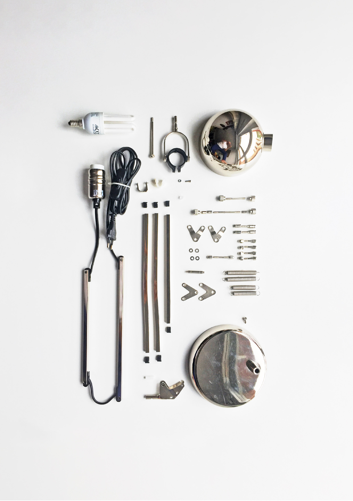
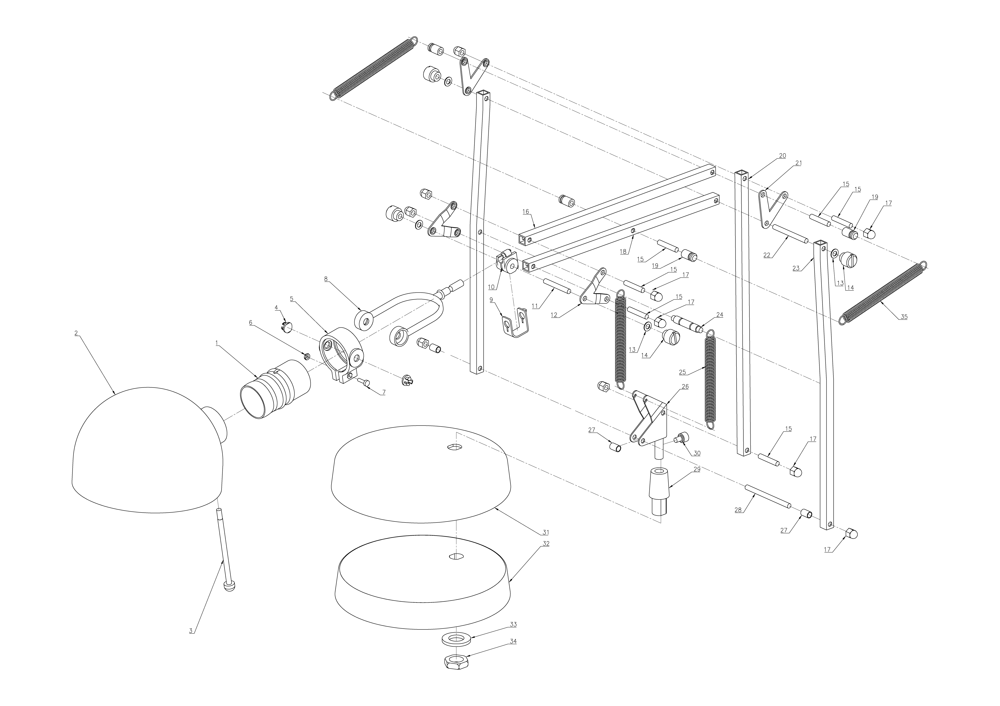
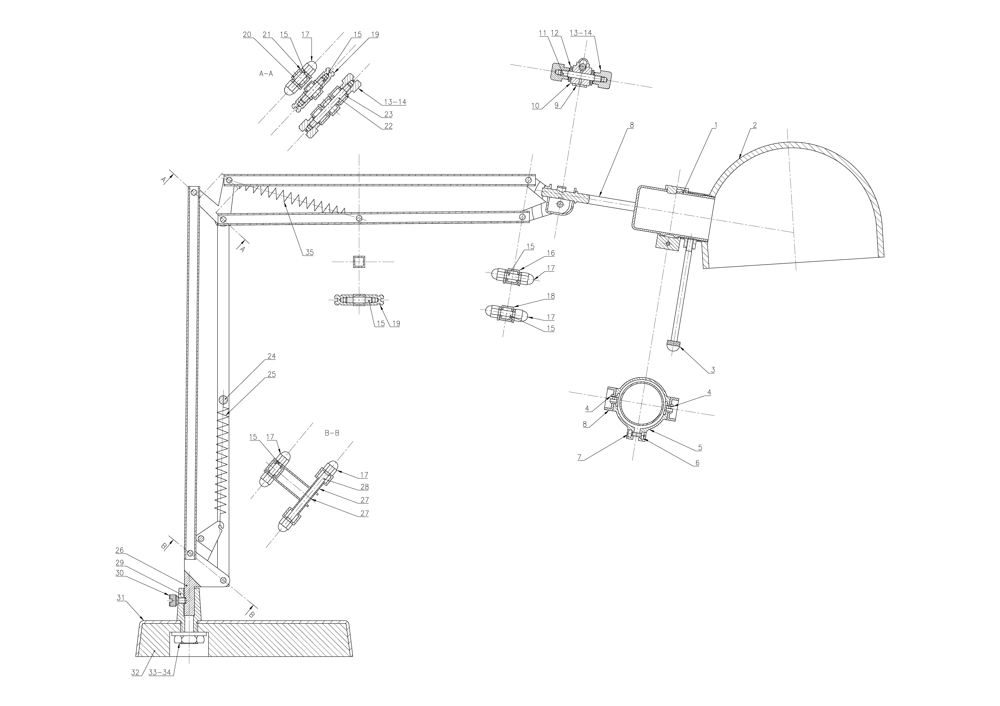
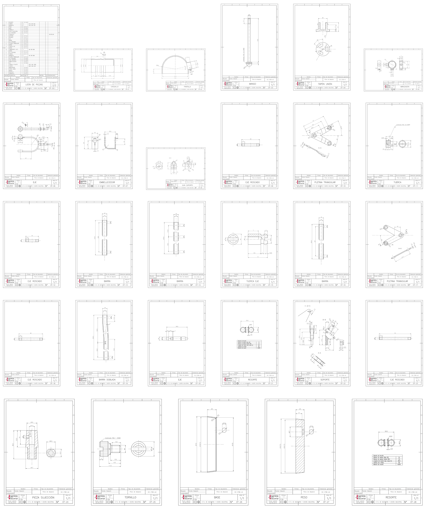

Forså
WHEN? Spring 2016
WHO? Tomás Cabezón
WHY? Graphical Engineering Course
WHERE? TU Madrid
For the Course of Graphical Engineering we were asked to choose an object and create all the layouts needed for it’s fabrication. I chose one of my favourite products of IKEA, the Forså lamp.
Deconstructing this complex object and analyzing the different parts of it showed me the importance of good design. I saw what makes IKEA’s product excellent, the details. Taking each of the pieces, measuring them, thinking how they are fabricated, how they are assembled or what’s their function, was a really inspiring experience.



